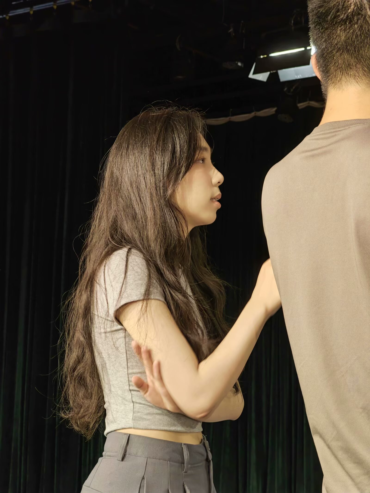

媒体编导与摄像实践
参与区级媒体、校级媒体与新闻部工作，完成民生视频、宣传片、新闻和活动拍摄，多条作品浏览量破万。
PERSONAL PORTFOLIO / 2026
影视编导 / AIGC 内容创作
Stories in motion — Nanjing / Hangzhou / Beijing
ABOUT ME

我是一名关注电影编导、AIGC 影像与视觉叙事的创作者。习惯从前期策划进入现场，再把素材整理成有节奏、有情绪的成片。
Profile / 基本信息
Capabilities / 主要能力
CAMPUS EXPERIENCE
从校园媒体到舞台现场，练习策划、拍摄、编导与后期协作。
参与区级媒体、校级媒体与新闻部工作，完成民生视频、宣传片、新闻和活动拍摄，多条作品浏览量破万。
参与院艺术团舞台设计与落地执行，完成广播剧录音、剪辑和发布。
上大电视节 AI 赛道二等奖；未来设计师数字艺术设计大赛浙江赛区三等奖；“挑战杯”铜奖。
PROFESSIONAL PATH
在综艺、品牌传播与 AIGC 项目中，负责从创意到交付的不同环节。
收集热点、参与创意策划与脚本撰写，执行现场拍摄任务。
运营官方账号，策划拍摄宣传视频，参与校招综艺宣传片与后期包装。
使用多种 AI 工具完成美术设计、分镜、视频制作与后期剪辑。
SELECTED WORKS / 06
六种影像练习，关于梦境、意识、历史、成长、亲情与传承。向下进入每一章。
SELECTED WORK / 05A
一部探讨虚实边界与梦境故障的剧情短片。双线叙事在现实与“人梦”之间切换，最终回到真实。
SELECTED WORK / 05B
一部关于意识上传与数字永生的 AIGC 科幻短片。故事发生在公元 3444 年，人类将意识上传至数字世界；当能源逐渐耗尽，所有人必须面对“抉择”机制，决定以何种形态继续存在。
SELECTED WORK / 05C
从《史记》中“单于留骞十余岁，予妻，有子”的留白出发，以匈奴女子娜仁的视角补写她与张骞在漠北相遇、相守与离别的故事。“橘子”是故乡、思念与文明连接的意象，也让被史书一笔带过的女性重新发声。影片以历史写实影像结合 AI 角色、场景、分镜与视频生成，再通过剪辑、声音和色彩完成叙事。
SELECTED WORK / 05C
围绕“追寻活剧梦想”展开的品牌短片，负责导演、剪辑与 AI 辅助后期，完成从脚本到成片的视觉统一。
SELECTED WORK / 06E
一对相依为命的母女，都把辛劳藏进“为对方好”的谎言里。红围巾贯穿童年与当下，在理解中重新说出彼此的爱。
SELECTED WORK / 06F
聚焦瓯剧传承人的艺术生涯，记录他走进戏曲的初心、对未来的期待，以及传统戏曲在当下传承与传播中面对的现实。
END CREDIT / 08
© 2026 娄缘 · Personal Portfolio